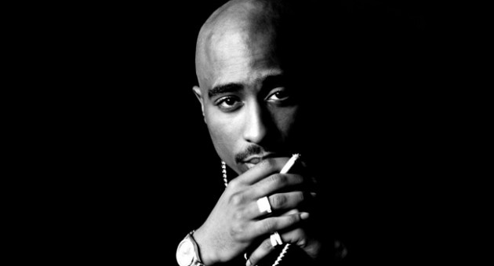

Tupac Amaru Shakur, mais conhecido pelos seus nomes artísticos 2Pac, Makaveli ou apenas Pac, foi um rapper, ator e compositor estadunidense, considerado por muitos como um dos melhores e mais importantes rappers de todos os tempos.

"Isto sempre acontece. Todos os negros que mudam o mundo de alguma forma morrem. Mas eles nunca morrem de maneiras normais, eles sempre morrem de forma violenta."
- Tupac Amaru Shakur
Se quiser saber mais sobre a história de Tupac, acesse a biografia completa emWikipedia.